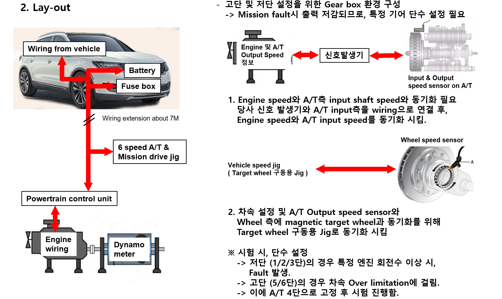

수많은 기업 또는 개인은 흔히 성공한 인물 또는 기업들의 사례 및 상품들을 보고 배우고 변화하며 살아간다. 자동차산업 또한 수만개의 부품으로 만들어진 상품인 만큼 벤치마킹 사업이 활발하게 이루어 지고 있다.
본인은 자동차산업 중 엔진관련 팀에 종사함으로 외제경쟁차에 대한 벤치마킹 프로젝트를 몇차례 진행하였다. 위의 사진과 같이 실차에서 엔진 및 엔진의 구동에 관련 된 부품 등을 탈거하여 엔진 시험 Cell에 설치하여 필요로 하는 Data를 확보하는 업무이다.
개인적인 경험으로는 여러 업무 중 벤치마킹 프로젝트가 경험 중 가장 힘든 분야로 생각된다. 그에 대한 가장 큰 이유로는 요즘 차동차들은 예전의 기계제어에서 전자제어(ECU, TCU, BCM 등)의 수많은 제어모듈이 존재하는 동시에 그 모듈들은 CAN통신을 주고 받으며 각 회사들의 특유의 로직에 의해 작동 및 출력제한, 이모빌라이저 등이 존재하여 정답이 없는 부분이 큰 이유이다.